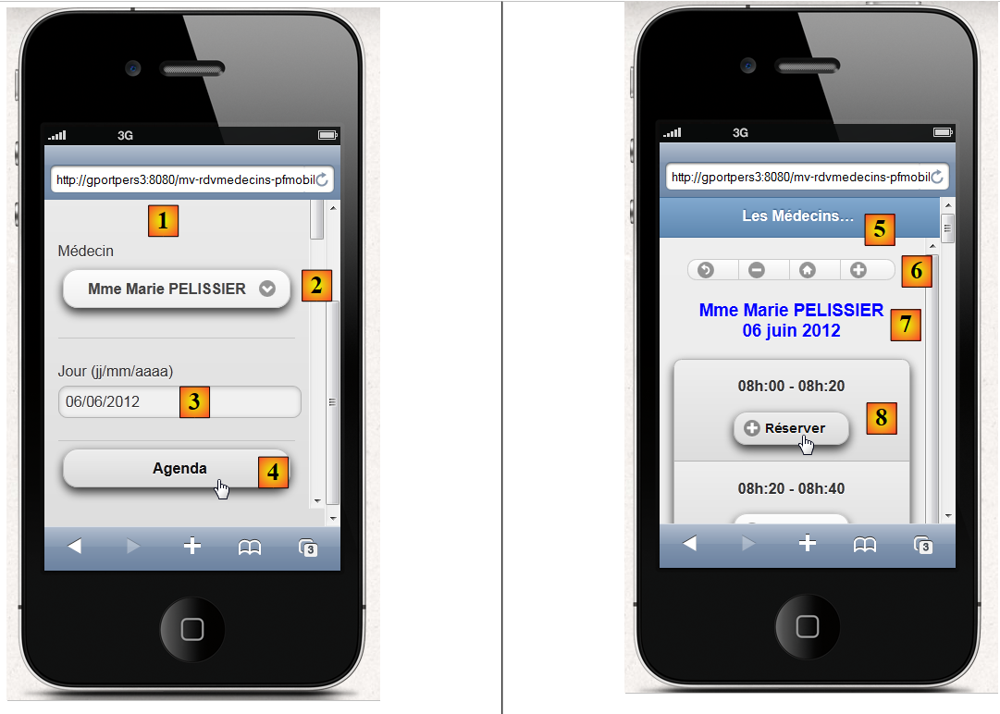
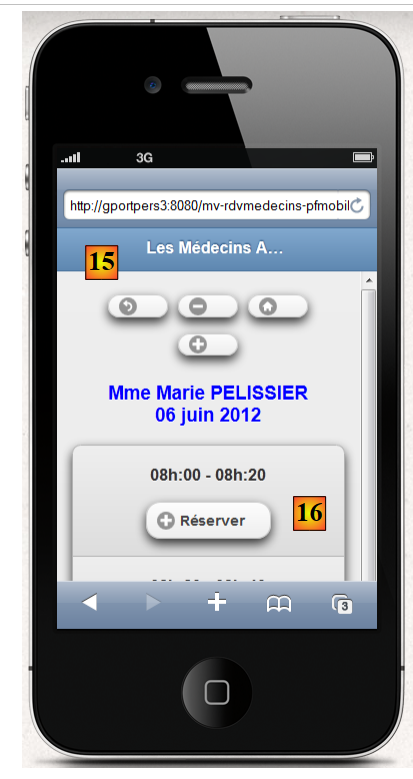
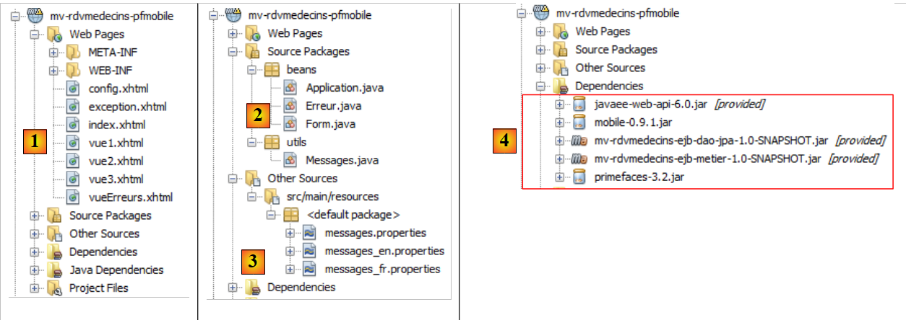
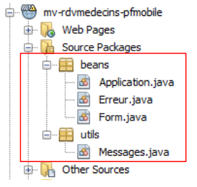
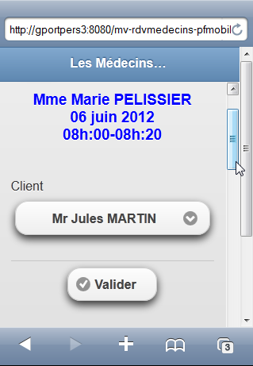
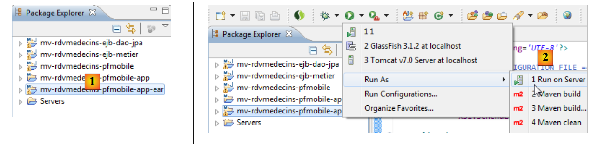

9. 示例应用程序 05：rdvmedecins-pfm-ejb
回顾为 Glassfish 服务器开发的示例应用 01 JSF / EJB 的结构：
 |
除了Web层将使用JSF、Primefaces和Primefaces mobile实现外，我们对该架构不作任何更改。目标浏览器将是移动设备。
 |
我们使用 Glassfish 开发了两个应用程序：
- 应用程序01使用JSF / EJB，界面较为简陋；
- 应用程序 03 使用了 PF / EJB，界面功能丰富。
鉴于 Primefaces Mobile 提供的组件数量有限，我们将回归应用程序 01 的简陋界面。此外，视图必须能够适应移动设备屏幕的较小尺寸。
9.1. 视图
为了便于理解，我们展示一些在 iPhone 4 模拟器中运行的应用程序视图：
 |
- 在 [1] 中，这是首页。需要注意的是，这次必须指定机器名称（也可以输入其地址 IP），因为使用机器 localhost 时，页面无法显示任何内容，
- 在 [2] 中，医生下拉列表，
- 在 [3] 时，显示预约的期望日期，
- 在 [4] 中，显示“查看今日日程”按钮，
- 在 [5] 中，新视图显示了医生的可用时段，
- 在 [6] 中，用于在日历中导航的一系列按钮，
- 在 [7]，一条提示医生和日期的信息，
- 在 [8] 中，显示一个可预约的时间段。我们来操作一下，
 |
- 在 [9] 中，显示客户选择界面，
- 在 [10] 中，显示一条提醒信息，列出预约涉及的医生、日期和时间段，
- 在 [11] 中，显示客户下拉列表，
- 在 [12] 中，确认按钮，
- 在 [13] 中，确认后返回日程表，
- 在 [14]，该时段现已预订成功。现在我们将取消预订，
 |
- 在 [15]，界面保持不变，
- 但在 [16] 中，该预约已被删除，
在首页可以切换语言 [17], [18], [19]：
 |
最后，我们还设计了一个错误视图：
 |
9.2. NetBeans 项目
NetBeans 项目如下：
 |
- [mv-rdvmedecins-ejb-dao-jpa]：示例 01 中 [DAO] 和 [JPA] 层的 EJB 项目，
- [mv-rdvmedecins-ejb-metier]：示例01中[métier]层的EJB项目，
- [mv-rdvmedecins-pfmobile]：[web] 层的项目 / Primefaces 移动版 – 新增，
- [mv-rdvmedecins-pfmobile-app-ear]：用于将应用程序部署到 Glassfish 服务器的企业项目 – 新增。
9.3. 企业项目
企业项目仅用于将三个模块 [mv-rdvmedecins-ejb-dao-jpa]、[mv-rdvmedecins-ejb-metier]、[mv-rdvmedecins-pfmobile] 部署到 Glassfish 服务器上。NetBeans 项目如下：
 |
该项目仅用于处理这三个在文件 [pom.xml] 中按以下方式定义的依赖项 [1]：
<?xml version="1.0" encoding="UTF-8"?>
<project xmlns="http://maven.apache.org/POM/4.0.0" xmlns:xsi="http://www.w3.org/2001/XMLSchema-instance" xsi:schemaLocation="http://maven.apache.org/POM/4.0.0 http://maven.apache.org/xsd/maven-4.0.0.xsd">
<modelVersion>4.0.0</modelVersion>
...
<groupId>istia.st</groupId>
<artifactId>mv-rdvmedecins-pfmobile-app-ear</artifactId>
<version>1.0-SNAPSHOT</version>
<packaging>ear</packaging>
<name>mv-rdvmedecins-pfmobile-app-ear</name>
...
<dependencies>
<dependency>
<groupId>${project.groupId}</groupId>
<artifactId>mv-rdvmedecins-ejb-dao-jpa</artifactId>
<version>${project.version}</version>
<type>ejb</type>
</dependency>
<dependency>
<groupId>${project.groupId}</groupId>
<artifactId>mv-rdvmedecins-ejb-metier</artifactId>
<version>${project.version}</version>
<type>ejb</type>
</dependency>
<dependency>
<groupId>${project.groupId}</groupId>
<artifactId>mv-rdvmedecins-pfmobile</artifactId>
<version>${project.version}</version>
<type>war</type>
</dependency>
</dependencies>
</project>
- 第 6-9 行：企业项目的 Maven 构建产物，
- 第14-33行：项目的三个依赖项。请特别注意这些依赖项的类型（第19、25、31行）。
要运行该 Web 应用程序，需运行此企业项目。
9.4. Primefaces Mobile Web 项目
Primefaces Mobile Web 项目如下：
 |
- 在 [1] 中，包含该项目的页面。页面 [index.xhtml] 是该项目中的唯一页面。 它包含五个视图：[vue1.xhtml]、[vue2.xhtml]、[vue3.xhtml]、[vueErreurs.xhtml] 和 [config.xhtml]，
- 在 [2] 中，包含 Java Bean。[Application] Bean 的作用域为 application，[Form] Bean 的作用域为 session。 类 [Erreur] 封装了一个错误，
- 在 [3] 中，用于国际化的消息文件，
- 在 [4] 中，依赖项。Web 项目依赖于 [DAO] 层中的 EJB 项目， [métier] 层的 EJB 项目，以及 [web] 层的 Primefaces Mobile。
9.5. 项目配置
该项目的配置与我们之前研究过的 Primefaces 或 JSF 项目相同。我们列出配置文件，不再赘述。
 |  |
[web.xml]：配置 Web 应用程序。
<?xml version="1.0" encoding="UTF-8"?>
<web-app version="3.0" xmlns="http://java.sun.com/xml/ns/javaee" xmlns:xsi="http://www.w3.org/2001/XMLSchema-instance" xsi:schemaLocation="http://java.sun.com/xml/ns/javaee http://java.sun.com/xml/ns/javaee/web-app_3_0.xsd">
<context-param>
<param-name>javax.faces.PROJECT_STAGE</param-name>
<param-value>Development</param-value>
</context-param>
<context-param>
<param-name>javax.faces.FACELETS_SKIP_COMMENTS</param-name>
<param-value>true</param-value>
</context-param>
<servlet>
<servlet-name>Faces Servlet</servlet-name>
<servlet-class>javax.faces.webapp.FacesServlet</servlet-class>
<load-on-startup>1</load-on-startup>
</servlet>
<servlet-mapping>
<servlet-name>Faces Servlet</servlet-name>
<url-pattern>/faces/*</url-pattern>
</servlet-mapping>
<session-config>
<session-timeout>
30
</session-timeout>
</session-config>
<welcome-file-list>
<welcome-file>faces/index.xhtml</welcome-file>
</welcome-file-list>
<error-page>
<error-code>500</error-code>
<location>/faces/exception.xhtml</location>
</error-page>
<error-page>
<exception-type>Exception</exception-type>
<location>/faces/exception.xhtml</location>
</error-page>
</web-app>
请注意，第 26 行中，页面 [index.xhtml] 是该应用程序的首页。
[faces-config.xml]：配置应用程序JSF
<?xml version='1.0' encoding='UTF-8'?>
<!-- =========== FULL CONFIGURATION FILE ================================== -->
<faces-config version="2.0"
xmlns="http://java.sun.com/xml/ns/javaee"
xmlns:xsi="http://www.w3.org/2001/XMLSchema-instance"
xsi:schemaLocation="http://java.sun.com/xml/ns/javaee http://java.sun.com/xml/ns/javaee/web-facesconfig_2_0.xsd">
<application>
<resource-bundle>
<base-name>
messages
</base-name>
<var>msg</var>
</resource-bundle>
<message-bundle>messages</message-bundle>
<default-render-kit-id>PRIMEFACES_MOBILE</default-render-kit-id>
</application>
</faces-config>
[beans.xml]：内容为空，但对于注释 @Named 而言必不可少
<?xml version="1.0" encoding="UTF-8"?>
<beans xmlns="http://java.sun.com/xml/ns/javaee"
xmlns:xsi="http://www.w3.org/2001/XMLSchema-instance"
xsi:schemaLocation="http://java.sun.com/xml/ns/javaee http://java.sun.com/xml/ns/javaee/beans_1_0.xsd">
</beans>
[messages_fr.properties]：法语消息文件
# 页面
page.titre=Les M\u00e9decins Associ\u00e9s
format.date=dd/MM/yyyy
format.date_detail=dd/MM/yyyy
# 视图1
vue1.header=Les M\u00e9decins Associ\u00e9s - R\u00e9servations
# 表单 1
form1.titre=R\u00e9servations
form1.medecin=M\u00e9decin
form1.jour=Jour (jj/mm/aaaa)
form1.date.requise=La date est n\u00e9cessaire
form1.date.invalide=La date est invalide
form1.date.invalide_detail=La date est invalide
form1.agenda=Agenda
form1.options=Options
# 表单 2
form2.titre={0} {1} {2}<br/>{3}
form2.titre_detail={0} {1} {2}<br/>{3}
form2.retour=Retour
form2.supprimer=Supprimer
form2.reserver=R\u00e9server
form2.precedent=Jour pr\u00e9c\u00e9dent
form2.suivant=Jour suivant
form2.today=Aujourd'hui
# 表单 3
form3.client=Client
form3.valider=Valider
form3.titre={0} {1} {2}<br/>{3}<br/>{4,number,#00}h:{5,number,#00}-{6,number,#00}h:{7,number,#00}
form3.titre_detail={0} {1} {2}<br/>{3}<br/>{4,number,#00}h:{5,number,#00}-{6,number,#00}h:{7,number,#00}
form3.retour=Retour
# 错误
erreur.titre=Une erreur s'est produite.
# 配置
config.retour=Retour
config.titre=Configuration
config.langue=Langue
config.langue.francais=Fran\u00e7ais
config.langue.anglais=Anglais
config.valider=Valider
#异常
exception.titre=Application indisponible. Veuillez recommencer ult\u00e9rieurement.
[messages_en.properties]：英语消息文件
# 页面
page.titre=The Associated Doctors
format.date=dd/MM/yyyy
format.date_detail=dd/MM/yyyy
# 视图1
vue1.header=The Associated Doctors - Reservations
# 表单 1
form1.titre=Reservations
form1.medecin=Doctor
form1.jour=day (dd/mm/yyyy)
form1.date.requise=The date is necessary
form1.date.invalide=Invalid date
form1.date.invalide_detail=invalid date
form1.agenda=Diary
form1.options=Options
# 表单 2
form2.titre={0} {1} {2}<br/>{3}
form2.titre_detail={0} {1} {2}<br/>{3}
form2.retour=Back
form2.supprimer=Delete
form2.reserver=Reserve
form2.precedent=Previous Day
form2.suivant=Next Day
form2.today=Today
# 表单 3
form3.client=Patient
form3.valider=Validate
form3.titre={0} {1} {2}<br/>{3}<br/>{4,number,#00}h:{5,number,#00}-{6,number,#00}h:{7,number,#00}
form3.titre_detail={0} {1} {2}<br/>{3}<br/>{4,number,#00}h:{5,number,#00}-{6,number,#00}h:{7,number,#00}
form3.retour=Back
# 错误
erreur.titre=Some error happened
# 配置
config.retour=Back
config.titre=Configuration
config.langue=Language
config.langue.francais=French
config.langue.anglais=English
config.valider=Validate
#异常
exception.titre=Application not available. Please try again later.
9.6. 页面 [index.xhtml]
 |
该项目始终显示同一页面，即以下页面 [index.xhtml]：
<f:view xmlns="http://www.w3.org/1999/xhtml"
xmlns:f="http://java.sun.com/jsf/core"
xmlns:h="http://java.sun.com/jsf/html"
xmlns:ui="http://java.sun.com/jsf/facelets"
xmlns:p="http://primefaces.org/ui"
xmlns:pm="http://primefaces.org/mobile"
contentType="text/html"
locale="#{form.locale}">
<pm:page title="#{msg['page.titre']}">
<pm:view id="vue1">
<ui:fragment rendered="#{form.form1Rendered}">
<ui:include src="vue1.xhtml"/>
</ui:fragment>
<ui:fragment rendered="#{form.erreurInit}">
<ui:include src="vueErreurs.xhtml"/>
</ui:fragment>
</pm:view>
<pm:view id="vue2">
<ui:fragment rendered="#{form.form2Rendered}">
<ui:include src="vue2.xhtml"/>
</ui:fragment>
</pm:view>
<pm:view id="vue3">
<ui:fragment rendered="#{form.form3Rendered}">
<ui:include src="vue3.xhtml"/>
</ui:fragment>
</pm:view>
<pm:view id="vueErreurs">
<ui:fragment rendered="#{form.erreurRendered}">
<ui:include src="vueErreurs.xhtml"/>
</ui:fragment>
</pm:view>
<pm:view id="config">
<ui:include src="config.xhtml"/>
</pm:view>
</pm:page>
</f:view>
- 第 8 行：该页面已国际化（locale 属性），
- 第 10 行：该页面包含五个视图：视图 1 第 11 行，视图 2 第 19 行，视图 3 第 24 行，vueErreurs 第 29 行，配置 第 34 行。在某个时刻，仅其中一个视图可见。应用程序启动时，显示的是视图 1。 在此，我们遇到了以下难题：如果应用程序初始化成功，则应显示 [vue1.xhtml]；否则，应显示 [vueErreurs.xhtml]。 我们通过让视图 vue1 的内容由模型管理来解决了这个问题，该模型为布尔值 [Form].form1rendered（第 12 行）和 [Form].erreurInit（第15行）布尔值，从而确定视图1（第11行）的内容，
在模拟器中，视图 [vue1.xhtml] 的渲染结果为 [1]，视图 [vue2.xhtml] 的渲染结果为 [2]， 视图 [vue3.xhtml] 的渲染结果为 [3]：
 |
视图 [vueErreurs.xhtml] 渲染结果为 [4]，视图 [config.xhtml] 渲染结果为 [5]：
 |
9.7. 项目中的Bean
 |
[utils] 包中的类已介绍过：[Messages] 类是一个用于简化应用程序消息国际化的类。该类已在第 2.8.5.7 节中进行过探讨。
9.7.1. Application Bean
Bean [Application.java] 是 application 作用域下的 Bean。需要指出的是，此类 Bean 用于存储只读数据，并供应用程序的所有用户使用。该 Bean 如下所示：
package beans;
import javax.ejb.EJB;
import javax.enterprise.context.ApplicationScoped;
import javax.inject.Named;
import rdvmedecins.metier.service.IMetierLocal;
@Named(value = "application")
@ApplicationScoped
public class Application {
// 业务层
@EJB
private IMetierLocal metier;
public Application() {
}
// 获取器
public IMetierLocal getMetier() {
return metier;
}
}
- 第 8 行：将 Bean 命名为 application，
- 第 9 行：其作用域为应用程序，
- 第 13-14 行：应用服务器上的容器 EJB 将向其注入 [métier] 层的本地接口引用。回顾一下应用程序的架构：
 |
应用程序 PFM、EJB 和 [Metier] 将在同一个 JVM（Java 虚拟机）中运行。 因此，[PFM] 层将使用 EJB 的本地接口。仅此而已。 [Application] Bean 本身不包含其他内容。若要访问 [métier] 层，其他 Bean 将通过该 Bean 进行调用。
9.7.2. [Erreur] Bean
[Erreur] 类如下：
package beans;
public class Erreur {
public Erreur() {
}
// 字段
private String classe;
private String message;
// 构造函数
public Erreur(String classe, String message){
this.setClasse(classe);
this.message=message;
}
// 获取器和设置器
...
}
- 第 9 行：若抛出异常，则为异常类的名称；
- 第10行：错误消息。
9.7.3. Bean [Form]
其代码如下：
package beans;
...
@Named(value = "form")
@SessionScoped
public class Form implements Serializable {
public Form() {
}
// 应用程序 Bean
@Inject
private Application application;
private IMetierLocal metier;
// 会话缓存
private List<Medecin> medecins;
private List<Client> clients;
private Map<Long, Medecin> hMedecins = new HashMap<Long, Medecin>();
private Map<Long, Client> hClients = new HashMap<Long, Client>();
// 模型
private Long idMedecin;
private Date jour = new Date();
private String strJour;
private Boolean form1Rendered;
private Boolean form2Rendered;
private Boolean form3Rendered;
private Boolean erreurRendered;
private String form2Titre;
private String form3Titre;
private AgendaMedecinJour agendaMedecinJour;
private Long idCreneauChoisi;
private Medecin medecin;
private Long idClient;
private CreneauMedecinJour creneauChoisi;
private List<Erreur> erreurs;
private Boolean erreurInit = false;
private String action;
private String locale = "fr";
private String msgErreurDate = "";
private SimpleDateFormat dateFormatter;
private Boolean erreurDate;
@PostConstruct
private void init() {
System.out.println("init");
// 起初没有错误
erreurInit = false;
// 日期格式化
dateFormatter = new SimpleDateFormat(Messages.getMessage(null, "format.date", null).getSummary());
dateFormatter.setLenient(false);
// 当前日期
strJour = dateFormatter.format(jour);
// 获取业务层
metier = application.getMetier();
// 将医生和客户数据缓存
try {
medecins = metier.getAllMedecins();
clients = metier.getAllClients();
} catch (Throwable th) {
// 记录错误
erreurInit = true;
prepareVueErreur(th);
return;
}
// 验证列表
if (medecins.size() == 0) {
// 记录错误
erreurInit = true;
erreurs = new ArrayList<Erreur>();
erreurs.add(new Erreur("", "La liste des médecins est vide"));
}
if (clients.size() == 0) {
// 记录错误
erreurInit = true;
erreurs = new ArrayList<Erreur>();
erreurs.add(new Erreur("", "La liste des clients est vide"));
}
// 错误？
if (erreurInit) {
// 显示错误视图
setForms(false, false, false, true);
return;
}
// 字典
for (Medecin m : medecins) {
hMedecins.put(m.getId(), m);
}
for (Client c : clients) {
hClients.put(c.getId(), c);
}
// 视图 1
setForms(true, false, false, false);
}
// 视图显示
private void setForms(Boolean form1Rendered, Boolean form2Rendered, Boolean form3Rendered, Boolean erreurRendered) {
this.form1Rendered = form1Rendered;
this.form2Rendered = form2Rendered;
this.form3Rendered = form3Rendered;
this.erreurRendered = erreurRendered;
}
// 准备vueErreur
private void prepareVueErreur(Throwable th) {
// 生成错误列表
erreurs = new ArrayList<Erreur>();
erreurs.add(new Erreur(th.getClass().getName(), th.getMessage()));
while (th.getCause() != null) {
th = th.getCause();
erreurs.add(new Erreur(th.getClass().getName(), th.getMessage()));
}
// 显示错误视图
setForms(false, false, false, true);
}
// 获取器和设置器
..
}
- 第5-7行：类[Form]是一个名为form且作用域为session的Bean。需要提醒的是，此时该类必须可序列化，
- 第12-13行：表单Bean持有应用程序Bean的引用。该引用将由应用程序运行的Servlet容器注入（存在@Inject注解）。
- 第 24-27 行：控制视图 vue1（第 24 行）、vue2（第 25 行）、vue3（第 26 行）和 vueErreurs（第 27 行）的显示，
- 第43-44行：类实例化后立即执行init方法（存在@PostConstruct注解），
- 第49-50行：处理日期格式。PrimeFaces Mobile不提供日历功能。此外，JSF验证器无法在PFM页面中使用。因此我们需要手动处理日程表的日期输入，
- 第49行：设定日期格式。该格式取自国际化文件：
format.date=dd/MM/yyyy
format.date_detail=dd/MM/yyyy
- 第50行：指定日期处理时不应采用“laxiste”格式。若不进行此设置，输入“32/12/2011”这类错误格式将被视为有效日期“01/01/2012”，
- 第54行：从Bean [Application]中获取[métier]层的引用，
- 第57-58行：向[métier]层请求医生和客户列表，
- 第66-91行：若一切顺利，则构建医生和客户的字典。它们按编号进行索引。随后，将显示视图[vue1.xhtml]（第93行），
- 第59行：若发生错误，则构建页面[vueErreurs.xhtml]的模板。该模板即第35行中的错误列表，
- 第105-115行：方法[prepareVueErreur]构建待显示的错误列表。随后，页面[index.xhtml]显示视图[vueErreurs.xhtml]（第114行）。
页面 [erreur.xhtml] 如下所示：
<?xml version='1.0' encoding='UTF-8' ?>
<!DOCTYPE html PUBLIC "-//W3C//DTD XHTML 1.0 Transitional//EN" "http://www.w3.org/TR/xhtml1/DTD/xhtml1-transitional.dtd">
<html xmlns="http://www.w3.org/1999/xhtml"
xmlns:h="http://java.sun.com/jsf/html"
xmlns:p="http://primefaces.org/ui"
xmlns:f="http://java.sun.com/jsf/core"
xmlns:pm="http://primefaces.org/mobile"
xmlns:ui="http://java.sun.com/jsf/facelets">
<!-- 错误视图 -->
<pm:header title="#{msg['page.titre']}" swatch="b">
<f:facet name="left">
<p:button icon="home" value=" " href="#vue1?reverse=true" />
</f:facet>
</pm:header>
<pm:content>
<div align="center">
<h1><h:outputText value="#{msg['erreur.titre']}" style="color: blue"/></h1>
</div>
<p:dataList value="#{form.erreurs}" var="erreur">
<b>#{erreur.classe}</b> : <i>#{erreur.message}</i>
</p:dataList>
</pm:content>
</html>
它使用 <p:dataList> 标签（第 21-23 行）来显示错误列表。第 13 行的按钮可用于返回视图 vue1。
 |
- 按钮 [1] 由第 13 行生成。icon 属性用于设置按钮图标。该按钮将用户带回 vue1 视图（href 属性），
- 标题 [2] 由第 11-15 行生成，
- 标题 [3] 由第 18 行生成，
- 文本 [4] 由第 22 行的模板 #{erreur.classe} 生成，
- 文本 [5] 由第 22 行中的模板 #{erreur.message} 生成。
接下来我们将定义应用程序生命周期的各个阶段。针对用户的每项操作，我们将研究相关的视图以及其中发生的事件处理程序。
9.8. 显示首页
如果一切正常，首先显示的视图是 [vue1.xhtml]。这将呈现如下视图：
 |
视图 [vue1.xhtml] 的代码如下：
<?xml version='1.0' encoding='UTF-8' ?>
<!DOCTYPE html PUBLIC "-//W3C//DTD XHTML 1.0 Transitional//EN" "http://www.w3.org/TR/xhtml1/DTD/xhtml1-transitional.dtd">
<html xmlns="http://www.w3.org/1999/xhtml"
xmlns:h="http://java.sun.com/jsf/html"
xmlns:p="http://primefaces.org/ui"
xmlns:f="http://java.sun.com/jsf/core"
xmlns:pm="http://primefaces.org/mobile"
xmlns:ui="http://java.sun.com/jsf/facelets">
<!-- 视图 1 -->
<pm:header title="#{msg['page.titre']}" swatch="b">
<f:facet name="left">
<p:button icon="gear" value=" " href="#config" />
</f:facet>
</pm:header>
<pm:content>
<h:form id="form1">
<div align="center">
<h1><h:outputText value="#{msg['form1.titre']}" style="color: blue"/></h1>
</div>
<pm:field>
<h:outputLabel value="#{msg['form1.medecin']}" for="choixMedecin"/>
<h:selectOneMenu id="choixMedecin" value="#{form.idMedecin}">
<f:selectItems value="#{form.medecins}" var="medecin" itemLabel="#{medecin.titre} #{medecin.prenom} #{medecin.nom}" itemValue="#{medecin.id}"/>
</h:selectOneMenu>
</pm:field>
<pm:field>
<h:outputLabel value="#{msg['form1.jour']}" for="jour"/>
<p:inputText id="jour" value="#{form.strJour}"/>
<ui:fragment rendered="#{form.erreurDate}">
<p:spacer width="50px"/>
<h:outputText id="msgErreurDate" value="#{form.msgErreurDate}" style="color: red"/>
</ui:fragment>
</pm:field>
<p:commandButton value="#{msg['form1.agenda']}" update=":form1, :vue2, :vueErreurs" action="#{form.getAgenda}" />
</h:form>
</pm:content>
</html>
- 第 11-15 行：生成标题 [1]，
- 第 13 行：生成按钮 [2]。点击该按钮将显示配置视图（href 属性），
- 第 19 行：生成标题 [3]，
- 第 21-26 行：生成医生下拉列表 [4]，
- 第27-34行：生成日期输入框 [5]。该输入框使用无验证器的 <p:inputText> 标签实现。 日期验证将在服务器端进行。如果日期不正确，服务器将设置一条错误消息，该消息由第30-34行显示，
 |
- 第35行：表单提交按钮。它会更新三个区域：form1（view1中的表单）、view2以及vueErreurs。实际上，如果日期无效，则应更新form1；如果日期正确，则应更新view2。 最后，如果发生异常（例如数据库连接中断），则应显示 vueErreurs。可能会有人想用 vue1 代替 form1（更新整个视图）。但在这种情况下，应用程序会出现故障。
该视图基于以下模型：
@Named(value = "form")
@SessionScoped
public class Form implements Serializable {
public Form() {
}
// 应用程序 Bean
@Inject
private Application application;
private IMetierLocal metier;
// 会话缓存
private List<Medecin> medecins;
private List<Client> clients;
// 模型
private Long idMedecin;
private Date jour = new Date();
private String strJour;
private Boolean form1Rendered;
private Boolean form2Rendered;
private Boolean form3Rendered;
private Boolean erreurRendered;
private String msgErreurDate = "";
private Boolean erreurDate;
// 医生列表
public List<Medecin> getMedecins() {
return medecins;
}
// 日程表
public String getAgenda() {
...
}
}
- 第16行的字段负责读取和写入页面第23行列表中的值。在页面初次显示时，它会将下拉列表中选中的值固定下来，
- 第27-29行的方法生成医生下拉列表的选项（视图第24行）。每个生成的选项将以（itemLabel）作为标签，显示医生的头衔、姓氏和名字，并以（itemValue）作为值，表示医生的ID，
- 第18行的字段通过读写方式为页面第29行的输入字段提供数据，
- 第32-34行：方法getAgenda负责处理页面第35行按钮[Agenda]的点击事件。其代码如下：
// 日程表
public String getAgenda() {
try {
// 查看日期
jour = dateFormatter.parse(strJour);
// 无错误
erreurDate=false;
msgErreurDate = "";
// 创建日程表
return getAgenda(jour);
} catch (ParseException ex) {
// 错误信息
erreurDate=true;
msgErreurDate = Messages.getMessage(null, "form1.date.invalide", null).getSummary();
// 视图1
setForms(true, false, false, false);
return "pm:vue1";
}
}
- 该方法首先验证用户输入的日期是否有效，
- 第 5 行：日期格式为 parsée，该格式由方法 init 在模型实例化时初始化，
- 第11行：若发生异常，则设置错误（第13行），构建国际化错误消息（第14行），准备视图 vue1（第16行）并显示视图 vue1（第17行），
- 第 10 行：如果日期正确，则执行以下方法：
// 日程表
public String getAgenda(Date jour) {
// 目前尚未选择时段
creneauChoisi = null;
try {
// 获取所选医生
medecin = hMedecins.get(idMedecin);
// 表单标题 2
form2Titre = Messages.getMessage(null, "form2.titre", new Object[]{medecin.getTitre(), medecin.getPrenom(), medecin.getNom(), new SimpleDateFormat("dd MMM yyyy").format(jour)}).getSummary();
// 某一天的医生日程表
agendaMedecinJour = metier.getAgendaMedecinJour(medecin, jour);
// 显示视图 2
setForms(false, true, false, false);
return "pm:vue2";
} catch (Throwable th) {
System.out.println(th);
// 错误视图
prepareVueErreur(th);
return "pm:vueErreurs";
}
}
这里出现的代码我们之前已经多次见过。第 9 行，为 vue2 视图构建了一个国际化消息：
form2.titre={0} {1} {2}<br/>{3}
form2.titre_detail={0} {1} {2}<br/>{3}
请注意，我们在消息中插入了 XHTML。它将以如下方式显示：
 |
9.9. 显示医生的日程表
医生的日程表通过视图 [vue2.xhtml] 显示：
 |
视图 [vue2.xhtml] 的代码如下：
<?xml version='1.0' encoding='UTF-8' ?>
<!DOCTYPE html PUBLIC "-//W3C//DTD XHTML 1.0 Transitional//EN" "http://www.w3.org/TR/xhtml1/DTD/xhtml1-transitional.dtd">
<html xmlns="http://www.w3.org/1999/xhtml"
xmlns:h="http://java.sun.com/jsf/html"
xmlns:p="http://primefaces.org/ui"
xmlns:f="http://java.sun.com/jsf/core"
xmlns:pm="http://primefaces.org/mobile"
xmlns:ui="http://java.sun.com/jsf/facelets">
<!-- 视图 2 -->
<pm:header title="#{msg['page.titre']}" swatch="b"/>
<pm:content>
<h:form id="form2">
<div align="center">
<pm:buttonGroup orientation="horizontal">
<p:commandButton inline="true" icon="back" value=" " action="#{form.showVue1}" update=":vue1"/>
<p:commandButton inline="true" icon="minus" value=" " action="#{form.getPreviousAgenda}" update=":form2"/>
<p:commandButton inline="true" icon="home" value=" " action="#{form.getTodayAgenda}" update=":form2"/>
<p:commandButton inline="true" icon="plus" value=" " action="#{form.getNextAgenda}" update=":form2"/>
</pm:buttonGroup>
<h3><h:outputText value="#{form.form2Titre}" style="color: blue" escape="false"/></h3>
</div>
<p:dataList id="creneaux" type="inset" value="#{form.agendaMedecinJour.creneauxMedecinJour}" var="creneauMedecinJour">
<p:column>
<div align="center">
<h2>
<h:outputFormat value="{0,number,#00}h:{1,number,#00} - {2,number,#00}h:{3,number,#00}">
<f:param value="#{creneauMedecinJour.creneau.hdebut}" />
<f:param value="#{creneauMedecinJour.creneau.mdebut}" />
<f:param value="#{creneauMedecinJour.creneau.hfin}" />
<f:param value="#{creneauMedecinJour.creneau.mfin}" />
</h:outputFormat>
<ui:fragment rendered="#{creneauMedecinJour.rv!=null}">
<br/>
<h:outputText value="#{creneauMedecinJour.rv.client.titre} #{creneauMedecinJour.rv.client.prenom} #{creneauMedecinJour.rv.client.nom}" style="color: blue"/>
</ui:fragment>
</h2>
</div>
<div align="center">
<ui:fragment rendered="#{creneauMedecinJour.rv!=null}">
<p:commandButton inline="true" action="#{form.action}" value="#{msg['form2.supprimer']}" icon="minus" update=":form2, :vue3, :vueErreurs">
<f:setPropertyActionListener value="#{creneauMedecinJour.creneau.id}" target="#{form.idCreneauChoisi}"/>
</p:commandButton>
</ui:fragment>
<ui:fragment rendered="#{creneauMedecinJour.rv==null}">
<p:commandButton inline="true" action="#{form.action}" value="#{msg['form2.reserver']}" icon="plus" update=":form2, :vue3, :vueErreurs">
<f:setPropertyActionListener value="#{creneauMedecinJour.creneau.id}" target="#{form.idCreneauChoisi}"/>
</p:commandButton>
</ui:fragment>
</div>
</p:column>
</p:dataList>
</h:form>
</pm:content>
</html>
- 第 11 行：生成标题 [1]，
- 第15-20行：生成按钮组[2]，
- 第 21 行：生成标题 [3]。请注意 escape 属性的值。正是它使我们能够解析已放入 form2Titre 中的代码 XHTML，
- 第24行：使用dataList显示时间段，
- 第28-33行：生成时间段标题[4]，
- 第34-37行：若该时段内有预约，则显示相关片段，
- 第36行：显示预约客户的身份信息，
- 第41-45行：若该时段有预约，则显示按钮[Supprimer]，
- 第46-50行：若该时段内无预约，则显示按钮 [Réserver]。
该视图主要由以下模型提供数据：
private AgendaMedecinJour agendaMedecinJour;
该字段为第24行的dataList提供数据。该字段由方法getAgenda构建，当从视图1切换到视图2时生成。
9.10. 删除预约
删除一个约会的流程如下：
 |  |
此操作涉及的视图如下：
<ui:fragment rendered="#{creneauMedecinJour.rv!=null}">
<p:commandButton inline="true" action="#{form.action}" value="#{msg['form2.supprimer']}" icon="minus" update=":form2, :vueErreurs">
<f:setPropertyActionListener value="#{creneauMedecinJour.creneau.id}" target="#{form.idCreneauChoisi}"/>
</p:commandButton>
</ui:fragment>
- 第 2 行：按钮 [Supprimer] 关联了方法 [Form].action（action 属性），
- 第 3 行：当前所处时段的 ID 将被发送至 [Form].idCreneauChoisi 模型，
- 第2行：调用AJAX将更新form2（视图2表单）区域以及视图vueErreurs。 实际上存在两种情况：如果一切正常，将重新显示视图2；否则将显示视图vueErreurs。
方法 [action] 如下：
// 对 RV 执行操作
public String action() {
// 在日程表中搜索时段
int i = 0;
Boolean trouvé = false;
while (!trouvé && i < agendaMedecinJour.getCreneauxMedecinJour().length) {
if (agendaMedecinJour.getCreneauxMedecinJour()[i].getCreneau().getId() == idCreneauChoisi) {
trouvé = true;
} else {
i++;
}
}
// 找到了吗？
if (!trouvé) {
// 真奇怪——重新显示 form2
setForms(false, true, false, false);
return "pm:vue2";
} else {
creneauChoisi = agendaMedecinJour.getCreneauxMedecinJour()[i];
}
// 找到了
// 根据所需操作
if (creneauChoisi.getRv() == null) {
return reserver();
} else {
return supprimer();
}
}
// 预约
public String reserver() {
...
}
public String supprimer() {
try {
// 删除预约
metier.supprimerRv(creneauChoisi.getRv());
// 更新日程表
agendaMedecinJour = metier.getAgendaMedecinJour(medecin, jour);
// 显示表单2
setForms(false, true, false, false);
return "pm:vue2";
} catch (Throwable th) {
// 显示错误
prepareVueErreur(th);
return "pm:vueErreurs";
}
}
- 第3-12行：根据收到的ID（第7行）查找对应的时间段，
- 如果找不到它（这不正常），则重新显示视图2（第16-17行），
- 第19行：如果找到了，则保存对应的对象[CreneauMedecinJour]。正是它让我们能够访问要删除的预约，
- 第26行：将其删除，
- 第35-48行：如果删除操作成功（第42-43行），则“删除”方法返回视图 vue2；如果出现问题（第46-47行），则返回视图 vueErreurs。
9.11. 预约
预约流程如下：
 |  |
系统将从视图 vue2 切换至视图 vue3。此操作涉及的代码如下：
<ui:fragment rendered="#{creneauMedecinJour.rv==null}">
<p:commandButton inline="true" action="#{form.action}" value="#{msg['form2.reserver']}" icon="plus" update=":vue3, :vueErreurs">
<f:setPropertyActionListener value="#{creneauMedecinJour.creneau.id}" target="#{form.idCreneauChoisi}"/>
</p:commandButton>
</ui:fragment>
- 第2行：按钮 [Réserver] 关联的方法为 [Form].action（属性 action），因此与按钮 [Supprimer] 的关联方法相同。 调用 AJAX 会根据调用处理过程中是否出现错误，分别更新 vue3 和 vueErreurs 视图。
- 第 3 行：与按钮 [Supprimer] 一样，时段的 ID 被传递给了模型。
处理此操作的模板如下：
// 对 RV 执行操作
public String action() {
...
// 根据所需操作
if (creneauChoisi.getRv() == null) {
return reserver();
} else {
return supprimer();
}
}
// 预订
public String reserver() {
try {
// 表单3标题
form3Titre = Messages.getMessage(null, "form3.titre", new Object[]{medecin.getTitre(), medecin.getPrenom(), medecin.getNom(), new SimpleDateFormat("dd MMM yyyy").format(jour),
creneauChoisi.getCreneau().getHdebut(), creneauChoisi.getCreneau().getMdebut(), creneauChoisi.getCreneau().getHfin(), creneauChoisi.getCreneau().getMfin()}).getSummary();
// 显示表单 3
setForms(false, false, true, false);
return "pm:vue3";
} catch (Throwable th) {
// 错误视图
prepareVueErreur(th);
return "pm:vueErreurs";
}
}
- 第 2-10 行：方法 action 将确定待预订对象 [CreneauMedecinJour] 的引用 creneauChoisi，然后调用方法 reserver，
- 第16行：构建一条国际化消息。内容如下：
form3.titre={0} {1} {2}<br/>{3}<br/>{4,number,#00}h:{5,number,#00}-{6,number,#00}h:{7,number,#00}
form3.titre_detail={0} {1} {2}<br/>{3}<br/>{4,number,#00}h:{5,number,#00}-{6,number,#00}h:{7,number,#00}
这将成为视图 vue3 的标题。与视图 vue2 一样，该标题包含 XML。它还包含用于显示时段时间表的格式化参数，
 |
- 第19-20行：显示视图 vue3，
- 第23-24行：若遇到问题，则显示视图vueErreurs。
9.12. 确认预约
确认预约的流程如下：
 |
在 [1] 中显示视图 vue3，在 [2] 中显示视图 vue2（添加预约后）。
视图3的代码[vue3.xhtml]如下：
<?xml version='1.0' encoding='UTF-8' ?>
<!DOCTYPE html PUBLIC "-//W3C//DTD XHTML 1.0 Transitional//EN" "http://www.w3.org/TR/xhtml1/DTD/xhtml1-transitional.dtd">
<html xmlns="http://www.w3.org/1999/xhtml"
xmlns:h="http://java.sun.com/jsf/html"
xmlns:p="http://primefaces.org/ui"
xmlns:f="http://java.sun.com/jsf/core"
xmlns:pm="http://primefaces.org/mobile"
xmlns:ui="http://java.sun.com/jsf/facelets">
<!-- 视图 3 -->
<pm:header title="#{msg['page.titre']}" swatch="b"/>
<pm:content>
<h:form id="form3">
<p:commandButton inline="true" value=" " icon="back" action="#{form.showVue2}" update=":vue2"/>
<div align="center">
<h3><h:outputText value="#{form.form3Titre}" style="color: blue" escape="false"/></h3>
</div>
<pm:field>
<h:outputLabel value="#{msg['form3.client']}" for="choixClient"/>
<h:selectOneMenu id="choixClient" value="#{form.idClient}">
<f:selectItems value="#{form.clients}" var="client" itemLabel="#{client.titre} #{client.prenom} #{client.nom}" itemValue="#{client.id}"/>
</h:selectOneMenu>
</pm:field>
<div align="center">
<p:commandButton inline="true" value="#{msg['form3.valider']}" action="#{form.validerRv}" update=":vue2, :vueErreurs" icon="check"/>
</div>
</h:form>
</pm:content>
</html>
- 第 16 行：生成视图 [3] 的标题。请注意 escape 属性的值，它允许在标题中解释 XHTML 字符，
- 第18-23行：生成客户下拉列表 [4]，
- 第25行：生成按钮 [Valider] [5]。方法 [Form].validerRv 与该按钮相关联：
// 预约确认
public String validerRv() {
try {
// 获取所选时段的实例
Creneau creneau = metier.getCreneauById(idCreneauChoisi);
// 添加预约
metier.ajouterRv(jour, creneau, hClients.get(idClient));
// 更新日程表
agendaMedecinJour = metier.getAgendaMedecinJour(medecin, jour);
// 显示 form2
setForms(false, true, false, false);
return "pm:vue2";
} catch (Throwable th) {
// 错误视图
prepareVueErreur(th);
return "pm:vueErreurs";
}
}
该代码在 01 版中已出现过。这里仅需注意视图的显示：
- 如果一切正常，则显示视图 vue2（第 11-12 行），
- 否则显示视图 vueErreurs（第 15-16 行）。
9.13. 取消预约
这对应于以下序列：
 |
视图 [vue3.xhtml] 中的按钮 [1] 如下所示：
<p:commandButton inline="true" value=" " icon="back" action="#{form.showVue2}" update=":vue2"/>
因此调用了方法 [Form].showVue2。该方法仅显示视图2：
public String showVue2() {
// 视图2
setForms(false, true, false, false);
return "pm:vue2?reverse=true";
}
9.14. 日历导航
在视图2中，通过按钮可在日历中进行导航：
前一天：
 |
次日：
 |
今天：
 |
虽然未在上述截图中显示，但日程表已更新，并显示了所选新日期的约会。
在 [vue2.xhtml] 中，这三个按钮的标签如下：
<pm:buttonGroup orientation="horizontal">
<p:commandButton inline="true" icon="back" value=" " action="#{form.showVue1}" update=":vue1"/>
<p:commandButton inline="true" icon="minus" value=" " action="#{form.getPreviousAgenda}" update=":form2"/>
<p:commandButton inline="true" icon="home" value=" " action="#{form.getTodayAgenda}" update=":form2"/>
<p:commandButton inline="true" icon="plus" value=" " action="#{form.getNextAgenda}" update=":form2"/>
</pm:buttonGroup>
方法 [Form]。getPreviousAgenda、[Form]、getNextAgenda、[Form].today 已在示例 03 中进行过研究。
9.15. 显示语言切换
语言切换由首页上的按钮控制：
 |
该按钮的代码如下：
<p:button icon="gear" value=" " href="#config" />
该按钮将跳转至配置视图 [2]。视图 [config.xhtml] 如下所示：
<?xml version='1.0' encoding='UTF-8' ?>
<!DOCTYPE html PUBLIC "-//W3C//DTD XHTML 1.0 Transitional//EN" "http://www.w3.org/TR/xhtml1/DTD/xhtml1-transitional.dtd">
<html xmlns="http://www.w3.org/1999/xhtml"
xmlns:h="http://java.sun.com/jsf/html"
xmlns:p="http://primefaces.org/ui"
xmlns:f="http://java.sun.com/jsf/core"
xmlns:pm="http://primefaces.org/mobile"
xmlns:ui="http://java.sun.com/jsf/facelets">
<!-- 视图1 -->
<pm:header title="#{msg['page.titre']}" swatch="b">
<f:facet name="left">
<p:button icon="back" value=" " href="#vue1?reverse=true" />
</f:facet>
</pm:header>
<pm:content>
<h:form id="frmConfig">
<div align="center">
<h3><h:outputText value="#{msg['config.titre']}" style="color: blue"/></h3>
</div>
<pm:field>
<h:outputLabel value="#{msg['config.langue']}" for="langue"/>
<h:selectOneRadio id="langue" value="#{form.locale}">
<f:selectItem itemLabel="#{msg['config.langue.francais']}" itemValue="fr"/>
<f:selectItem itemLabel="#{msg['config.langue.anglais']}" itemValue="en" />
</h:selectOneRadio>
</pm:field>
<p:commandButton value="#{msg['config.valider']}" action="#{form.configurer}" update=":vue1"/>
</h:form>
</pm:content>
</html>
- 第 11 行：显示 [3]，
- 第13行：显示按钮 [4]。该按钮用于返回视图 vue1，
- 第 17 行：显示视图的表单，
- 第 19 行：显示视图标题 [5]，
- 第21-27行：显示单选按钮。所选单选按钮的值（itemValue）将提交至模板 [Form].locale（第23行的 value 属性），
- 第28行：显示按钮[Valider]。调用AJAX会更新视图vue1（update属性）。被调用的方法是[Form].configurer：
public String configurer(){
// 配置完成后 - 重新显示视图1
redirect();
return null;
}
private void redirect() {
// 将客户端重定向至 Servlet
ExternalContext ctx = FacesContext.getCurrentInstance().getExternalContext();
try {
ctx.redirect(ctx.getRequestContextPath());
} catch (IOException ex) {
Logger.getLogger(Form.class.getName()).log(Level.SEVERE, null, ex);
}
}
configurer 方法（第 1 行）仅将移动浏览器的请求重定向至应用程序的 URL。因此，将加载的是 [index.xhtml] 页面：
<f:view xmlns="http://www.w3.org/1999/xhtml"
xmlns:f="http://java.sun.com/jsf/core"
xmlns:h="http://java.sun.com/jsf/html"
xmlns:ui="http://java.sun.com/jsf/facelets"
xmlns:p="http://primefaces.org/ui"
xmlns:pm="http://primefaces.org/mobile"
contentType="text/html"
locale="#{form.locale}">
<pm:page title="#{msg['page.titre']}">
<pm:view id="vue1">
...
</pm:view>
...
</pm:page>
</f:view>
- 第 8 行：视图将使用刚刚更改的语言（locale 属性），并显示 vue1（第 11 行）。
9.16. 结论
回顾一下我们刚刚构建的应用程序架构：
 |
为了适配移动端界面，需要重写页面 XHTML。 而模型部分则几乎没有变化。底层模块 [métier]、[DAO]、[JPA] 则完全未作改动。
9.17. Eclipse 测试
与之前示例应用程序的版本一样，我们将演示如何使用 Eclipse 测试此 05 版。首先，我们将示例 05 的 Maven 项目 [1] 导入 Eclipse：
 |
- [mv-rdvmedecins-ejb-dao-jpa]：包含 [DAO] 和 [JPA] 两个层，
- [mv-rdvmedecins-ejb-metier]：[métier]层，
- [mv-rdvmedecins-pfmobile]：由 Primefaces mobile 实现的 [web] 层，
- [mv-rdvmedecins-pfmobile-app]：企业项目 [mv-rdvmedecins-pfmobile-app-ear] 的父项目。导入父项目时，子项目会自动导入，
- 在 [2] 中，执行企业项目 [mv-rdvmedecins-pfmobile-app-ear]，
 |
- 在 [3] 中，选择 Glassfish 服务器，
- 在 [4] 中，在 [Servers] 选项卡中，应用程序已部署。它不会自动运行。 需在浏览器或移动模拟器中手动启动该应用：
 |